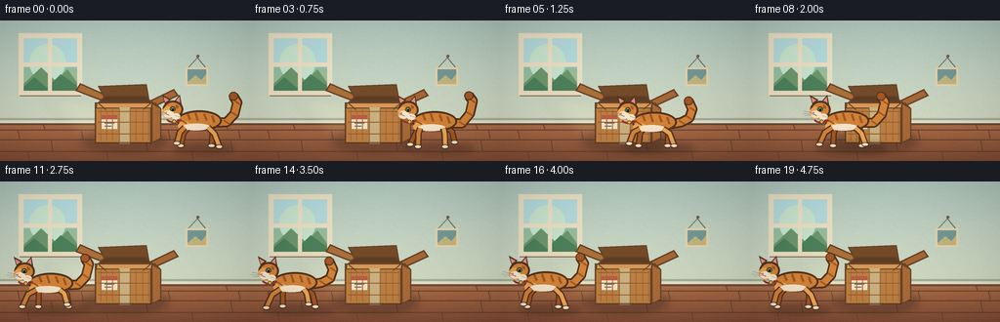
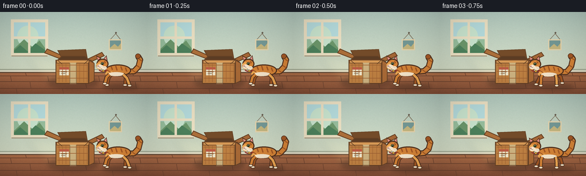
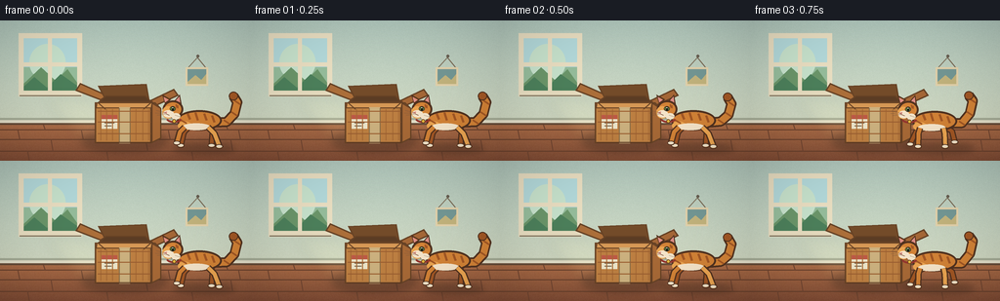
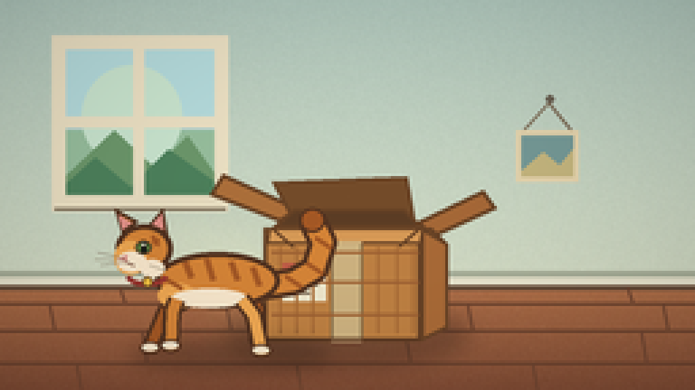
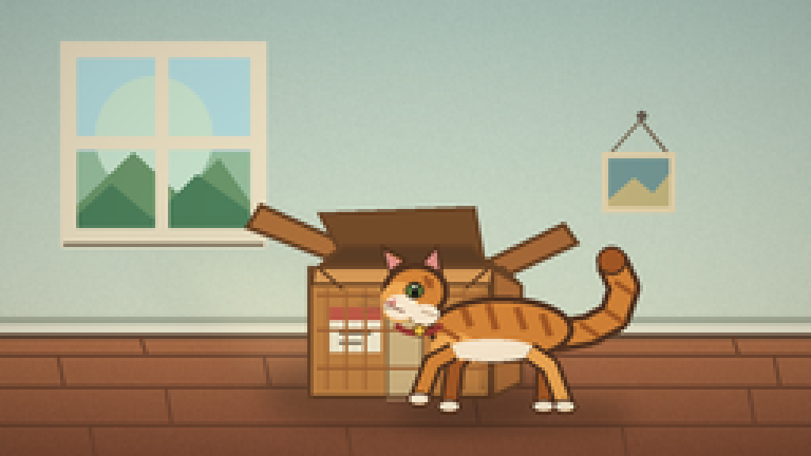
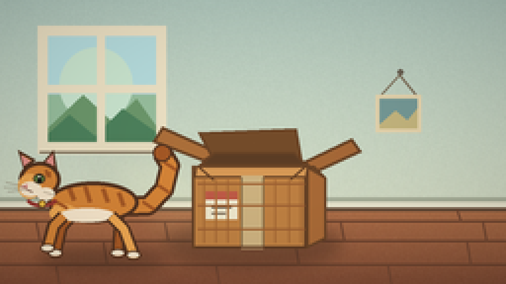
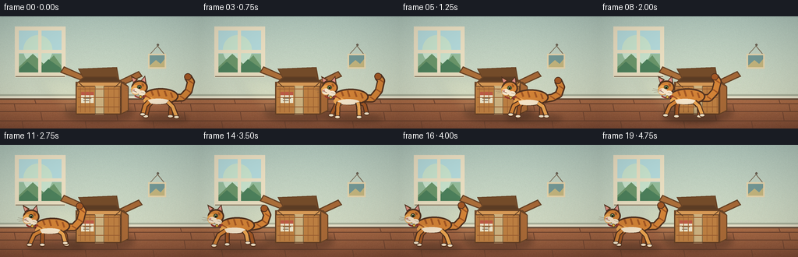

CODING AGENTS AS PIXEL WORLD MODELS
traex/DeepSeek-V4.1-Flash · dynamic_spatial_relationship_0007
点击播放 · 原生 RGB 像素
逐轮保存的候选
回放视频、检查图与代码变化。
每份候选均可单独播放。实际图片检查记录在下方工具轨迹中。
候选 01播放与检查图
点击播放 · 原生 RGB 像素

展开代码变化
--- 上一保存版本
+++ 本次保存版本
@@ -0,0 +1,389 @@
+from __future__ import annotations
+
+import math
+from pathlib import Path
+
+import cv2
+import numpy as np
+from PIL import Image, ImageDraw, ImageFilter
+
+import artifact_io
+
+
+CASE_DIR = Path(__file__).resolve().parent
+W, H = 256, 144
+SS = 4
+FPS = 4
+FRAMES = 20
+
+OUTLINE = (83, 51, 32, 255)
+FUR = (213, 132, 55, 255)
+FUR_LIGHT = (238, 167, 82, 255)
+FUR_DARK = (164, 88, 37, 255)
+CREAM = (248, 231, 204, 255)
+PINK = (224, 143, 134, 255)
+
+
+def scaled(values):
+ return tuple(int(round(v * SS)) for v in values)
+
+
+def xy(points):
+ return [(int(round(x * SS)), int(round(y * SS))) for x, y in points]
+
+
+def ellipse(draw, bounds, fill, outline=None, width=0):
+ draw.ellipse(
+ scaled(bounds),
+ fill=fill,
+ outline=outline,
+ width=max(0, int(round(width * SS))),
+ )
+
+
+def polygon(draw, points, fill, outline=None, width=0):
+ draw.polygon(
+ xy(points),
+ fill=fill,
+ outline=outline,
+ width=max(0, int(round(width * SS))),
+ )
+
+
+def line(draw, points, fill, width, joint="curve"):
+ draw.line(xy(points), fill=fill, width=max(1, int(round(width * SS))), joint=joint)
+
+
+def smoothstep(value):
+ value = max(0.0, min(1.0, value))
+ return value * value * (3.0 - 2.0 * value)
+
+
+def make_background():
+ """Draw a quiet, sunlit room with enough texture to feel physical."""
+ yy, xx = np.mgrid[0:H, 0:W].astype(np.float32)
+ image = np.zeros((H, W, 3), dtype=np.float32)
+
+ wall_top = np.array([178, 201, 190], dtype=np.float32)
+ wall_bottom = np.array([211, 219, 196], dtype=np.float32)
+ wall_mix = np.clip(yy / 105.0, 0.0, 1.0)[..., None]
+ image[:] = wall_top * (1.0 - wall_mix) + wall_bottom * wall_mix
+
+ floor_mask = yy >= 104
+ floor_top = np.array([176, 112, 73], dtype=np.float32)
+ floor_bottom = np.array([128, 76, 53], dtype=np.float32)
+ floor_mix = np.clip((yy - 104.0) / 40.0, 0.0, 1.0)[..., None]
+ floor_color = floor_top * (1.0 - floor_mix) + floor_bottom * floor_mix
+ image[floor_mask] = floor_color[floor_mask]
+
+ # Very light, deterministic paper grain.
+ rng = np.random.default_rng(17)
+ grain = rng.normal(0.0, 1.25, (H, W, 1))
+ image += grain
+ image = np.clip(image, 0, 255).astype(np.uint8)
+
+ canvas = Image.fromarray(image, "RGB").resize((W * SS, H * SS), Image.Resampling.BICUBIC)
+ draw = ImageDraw.Draw(canvas)
+
+ # Baseboard and its upper shadow.
+ draw.rectangle(scaled((0, 100, W, 106)), fill=(230, 226, 203))
+ draw.rectangle(scaled((0, 100, W, 102)), fill=(168, 175, 153))
+ draw.line(xy([(0, 106), (W, 106)]), fill=(105, 78, 58), width=2 * SS)
+
+ # Floor boards.
+ board_y = [112, 122, 134, 145]
+ for y in board_y:
+ draw.line(xy([(0, y), (W, y)]), fill=(105, 65, 45), width=1 * SS)
+ for y0, y1, offsets in (
+ (106, 112, (44, 136, 231)),
+ (112, 122, (18, 83, 172, 244)),
+ (122, 134, (52, 149, 236)),
+ (134, 145, (28, 109, 196)),
+ ):
+ for x in offsets:
+ draw.line(xy([(x, y0), (x + 2, y1)]), fill=(113, 70, 49), width=1 * SS)
+
+ # Window on the left, with a soft outdoor view.
+ ellipse(draw, (19, 13, 83, 77), (75, 91, 80, 255))
+ draw.rectangle(scaled((22, 16, 80, 74)), fill=(176, 210, 211))
+ draw.rectangle(scaled((23, 17, 79, 47)), fill=(181, 219, 220))
+ draw.rectangle(scaled((23, 48, 79, 73)), fill=(151, 190, 157))
+ ellipse(draw, (30, 24, 67, 62), (201, 228, 206, 210))
+ polygon(draw, [(24, 65), (42, 48), (57, 62), (69, 50), (79, 64), (79, 73), (24, 73)],
+ (108, 151, 107, 255))
+ polygon(draw, [(24, 68), (35, 58), (48, 69), (62, 55), (79, 67), (79, 73), (24, 73)],
+ (77, 129, 92, 255))
+
+ # Window frame and panes.
+ frame = (235, 224, 195, 255)
+ draw.rectangle(scaled((19, 13, 84, 18)), fill=frame)
+ draw.rectangle(scaled((19, 72, 84, 78)), fill=frame)
+ draw.rectangle(scaled((19, 13, 24, 78)), fill=frame)
+ draw.rectangle(scaled((79, 13, 84, 78)), fill=frame)
+ draw.rectangle(scaled((49, 17, 53, 73)), fill=frame)
+ draw.rectangle(scaled((23, 43, 79, 47)), fill=frame)
+ draw.line(xy([(20, 77), (83, 77)]), fill=(116, 103, 82), width=1 * SS)
+
+ # A pale beam from the window, laid over the wall and floor.
+ beam = Image.new("RGBA", canvas.size, (0, 0, 0, 0))
+ beam_draw = ImageDraw.Draw(beam)
+ polygon(beam_draw, [(44, 78), (91, 78), (159, 128), (85, 128)],
+ (255, 238, 175, 22))
+ beam = beam.filter(ImageFilter.GaussianBlur(7 * SS))
+ canvas = Image.alpha_composite(canvas.convert("RGBA"), beam)
+ draw = ImageDraw.Draw(canvas)
+
+ # A tiny wall nail and picture cord give the empty wall scale.
+ ellipse(draw, (201, 35, 204, 38), (105, 96, 82, 255))
+ draw.line(xy([(202, 38), (192, 49)]), fill=(126, 112, 91), width=1 * SS)
+ draw.line(xy([(202, 38), (211, 49)]), fill=(126, 112, 91), width=1 * SS)
+ draw.rectangle(scaled((190, 48, 213, 67)), fill=(228, 211, 172))
+ draw.rectangle(scaled((192, 50, 211, 65)), fill=(117, 153, 150))
+ polygon(draw, [(192, 63), (200, 56), (206, 61), (211, 55), (211, 65), (192, 65)],
+ (196, 181, 126, 255))
+
+ return canvas
+
+
+def draw_box(canvas):
+ draw = ImageDraw.Draw(canvas)
+
+ # Floor shadow.
+ shadow = Image.new("RGBA", canvas.size, (0, 0, 0, 0))
+ shadow_draw = ImageDraw.Draw(shadow)
+ ellipse(shadow_draw, (84, 113, 172, 134), (61, 40, 30, 92))
+ shadow = shadow.filter(ImageFilter.GaussianBlur(4 * SS))
+ canvas = Image.alpha_composite(canvas, shadow)
+ draw = ImageDraw.Draw(canvas)
+
+ cardboard = (190, 128, 66, 255)
+ cardboard_light = (214, 153, 86, 255)
+ cardboard_dark = (141, 87, 43, 255)
+ cardboard_edge = (104, 67, 38, 255)
+
+ # Open back flaps.
+ polygon(draw, [(103, 82), (77, 72), (82, 64), (111, 77)],
+ (172, 111, 58, 255), cardboard_edge, 1.5)
+ polygon(draw, [(153, 82), (178, 70), (183, 77), (159, 88)],
+ (166, 104, 55, 255), cardboard_edge, 1.5)
+ polygon(draw, [(108, 82), (100, 67), (150, 65), (153, 82)],
+ (116, 76, 42, 255), cardboard_edge, 1.2)
+
+ # Box body, with a subtle perspective side.
+ polygon(draw, [(97, 84), (159, 84), (165, 90), (165, 121), (155, 126), (97, 126)],
+ cardboard_dark, cardboard_edge, 1.8)
+ polygon(draw, [(97, 84), (155, 84), (155, 126), (97, 126)],
+ cardboard, cardboard_edge, 1.6)
+ polygon(draw, [(155, 84), (165, 90), (165, 121), (155, 126)],
+ (169, 106, 55, 255), cardboard_edge, 1.2)
+
+ # Top opening and front lip.
+ polygon(draw, [(100, 84), (108, 77), (149, 77), (156, 84)],
+ (92, 61, 37, 255), cardboard_edge, 1.2)
+ polygon(draw, [(99, 84), (156, 84), (155, 90), (98, 90)],
+ cardboard_light, cardboard_edge, 1.0)
+
+ # Packing tape and shipping label.
+ draw.rectangle(scaled((122, 89, 133, 126)), fill=(205, 178, 128, 175))
+ draw.line(xy([(122, 90), (122, 125)]), fill=(139, 113, 75, 180), width=1 * SS)
+ draw.line(xy([(133, 90), (133, 125)]), fill=(139, 113, 75, 180), width=1 * SS)
+ draw.rectangle(scaled((104, 97, 120, 111)), fill=(237, 230, 203))
+ draw.rectangle(scaled((104, 97, 120, 101)), fill=(190, 90, 70))
+ draw.line(xy([(107, 105), (117, 105)]), fill=(120, 103, 82), width=1 * SS)
+ draw.line(xy([(107, 108), (114, 108)]), fill=(120, 103, 82), width=1 * SS)
+
+ # Corrugation and edge wear.
+ for x in (103, 109, 115, 139, 146, 152):
+ draw.line(xy([(x, 91), (x, 123)]), fill=(168, 108, 55, 70), width=1 * SS)
+ for y in (93, 104, 116):
+ draw.line(xy([(100, y), (154, y)]), fill=(157, 96, 50, 45), width=1 * SS)
+ draw.line(xy([(99, 125), (155, 125)]), fill=(93, 58, 35), width=1 * SS)
+
+ # Small folds at the top corners.
+ draw.line(xy([(100, 84), (108, 91)]), fill=cardboard_edge, width=1 * SS)
+ draw.line(xy([(155, 84), (147, 91)]), fill=cardboard_edge, width=1 * SS)
+ return canvas
+
+
+def draw_leg(draw, hip, knee, paw, phase, color, near=True):
+ reach = 6.5 * math.sin(phase)
+ lift = 3.6 * max(0.0, math.cos(phase))
+ knee_x = knee[0] + reach * 0.55
+ knee_y = knee[1] - lift * 0.45
+ paw_x = paw[0] + reach
+ paw_y = paw[1] - lift
+ points = [hip, (knee_x, knee_y), (paw_x, paw_y)]
+ line(draw, points, OUTLINE, 6.8 if near else 6.2)
+ line(draw, points, color, 4.1 if near else 3.7)
+ ellipse(draw, (paw_x - 3.8, paw_y - 2.0, paw_x + 3.8, paw_y + 2.7),
+ color, OUTLINE, 1.0)
+ ellipse(draw, (paw_x - 3.0, paw_y - 1.2, paw_x + 2.8, paw_y + 1.5),
+ CREAM, None, 0)
+ return paw_x, paw_y
+
+
+def draw_cat(canvas, center_x, frame_index):
+ running = 2 <= frame_index <= 14
+ phase = (frame_index - 2) * 1.95 if running else 0.0
+ settle = max(0.0, min(1.0, (frame_index - 14) / 3.0))
+ bob = (1.5 * abs(math.sin(phase * 1.9)) if running else 0.0)
+ bob *= 1.0 - 0.65 * settle
+ body_y = 102.5 + bob
+ head_x = center_x - 28.0
+ head_y = 91.0 + bob * 0.7
+
+ # Ground shadow travels with the cat.
+ shadow = Image.new("RGBA", canvas.size, (0, 0, 0, 0))
+ shadow_draw = ImageDraw.Draw(shadow)
+ shadow_stretch = 33 if running else 28
+ ellipse(shadow_draw, (center_x - shadow_stretch, 126, center_x + shadow_stretch + 7, 136),
+ (56, 39, 29, 90))
+ shadow = shadow.filter(ImageFilter.GaussianBlur(3.5 * SS))
+ canvas = Image.alpha_composite(canvas, shadow)
+
+ cat = Image.new("RGBA", canvas.size, (0, 0, 0, 0))
+ draw = ImageDraw.Draw(cat)
+
+ # Tail first, so it sits behind the body. Its curve continues through the run.
+ tail_swing = 4.0 * math.sin(phase * 0.75) if running else 1.5
+ tail_points = [
+ (center_x + 16, body_y + 2),
+ (center_x + 27, body_y + 1 + tail_swing * 0.25),
+ (center_x + 35, body_y - 6 - tail_swing * 0.45),
+ (center_x + 38, body_y - 17 - tail_swing),
+ (center_x + 34, body_y - 24 - tail_swing * 0.6),
+ ]
+ line(draw, tail_points, OUTLINE, 10.5)
+ line(draw, tail_points, FUR, 7.1)
+ for idx in (1, 2, 3):
+ x, y = tail_points[idx]
+ line(draw, [(x - 3, y - 2), (x + 3, y + 2)], FUR_DARK, 2.0)
+ ellipse(draw, (tail_points[-1][0] - 4.8, tail_points[-1][1] - 4.5,
+ tail_points[-1][0] + 4.8, tail_points[-1][1] + 4.5),
+ FUR_DARK, OUTLINE, 1.1)
+
+ # Far legs, in a slightly darker fur tone.
+ draw_leg(draw, (center_x - 12, body_y + 7), (center_x - 17, 115),
+ (center_x - 20, 128), phase + math.pi, FUR_DARK, near=False)
+ draw_leg(draw, (center_x + 11, body_y + 7), (center_x + 16, 115),
+ (center_x + 18, 128), phase + math.pi * 1.45, FUR_DARK, near=False)
+
+ # Body and chest.
+ ellipse(draw, (center_x - 24, body_y - 10.5, center_x + 22, body_y + 10.5),
+ FUR, OUTLINE, 2.0)
+ ellipse(draw, (center_x - 23, body_y + 1.0, center_x - 9, body_y + 10.0),
+ FUR_LIGHT, None, 0)
+ ellipse(draw, (center_x - 18, body_y + 3, center_x + 10, body_y + 10),
+ CREAM, None, 0)
+
+ # Back stripes, clipped visually inside the body by their short lengths.
+ for dx, y0, y1 in ((-13, -7, -1), (-5, -8, 0), (4, -7, 0), (12, -5, 2)):
+ line(draw, [(center_x + dx, body_y + y0),
+ (center_x + dx + 2.5, body_y + y1)], FUR_DARK, 2.3)
+ line(draw, [(center_x - 21, body_y - 1), (center_x - 14, body_y + 3)], FUR_DARK, 1.8)
+
+ # Near legs.
+ draw_leg(draw, (center_x - 16, body_y + 7), (center_x - 21, 116),
+ (center_x - 24, 129), phase, FUR, near=True)
+ draw_leg(draw, (center_x + 8, body_y + 7), (center_x + 11, 116),
+ (center_x + 13, 129), phase + math.pi * 0.55, FUR_LIGHT, near=True)
+
+ # Head, ears, and cheek ruff.
+ polygon(draw, [(head_x - 8, head_y - 5), (head_x - 11, head_y - 15),
+ (head_x - 2, head_y - 10)], FUR, OUTLINE, 1.5)
+ polygon(draw, [(head_x + 1, head_y - 8), (head_x + 7, head_y - 15),
+ (head_x + 9, head_y - 4)], FUR, OUTLINE, 1.5)
+ polygon(draw, [(head_x - 8, head_y - 7), (head_x - 9.5, head_y - 12.5),
+ (head_x - 4.5, head_y - 9.5)], PINK, None, 0)
+ polygon(draw, [(head_x + 3, head_y - 9), (head_x + 6.5, head_y - 13),
+ (head_x + 7.2, head_y - 7)], PINK, None, 0)
+ ellipse(draw, (head_x - 10.5, head_y - 9.0, head_x + 10.5, head_y + 9.0),
+ FUR, OUTLINE, 2.0)
+ ellipse(draw, (head_x - 11.0, head_y - 3.0, head_x + 1.0, head_y + 9.5),
+ FUR_LIGHT, None, 0)
+
+ # Muzzle and chin.
+ ellipse(draw, (head_x - 10.0, head_y + 1.0, head_x + 0.8, head_y + 8.6),
+ CREAM, None, 0)
+ ellipse(draw, (head_x - 1.5, head_y + 4.0, head_x + 7.5, head_y + 10.5),
+ CREAM, None, 0)
+ polygon(draw, [(head_x - 9.8, head_y + 3.4), (head_x - 6.2, head_y + 2.3),
+ (head_x - 6.4, head_y + 5.1)], PINK, None, 0)
+ line(draw, [(head_x - 6.6, head_y + 5.1), (head_x - 3.7, head_y + 6.2)],
+ (106, 64, 49), 0.8)
+
+ # Eye and facial markings.
+ ellipse(draw, (head_x - 3.2, head_y - 3.0, head_x + 2.8, head_y + 2.1),
+ (109, 145, 69), (68, 48, 33), 0.8)
+ ellipse(draw, (head_x - 1.2, head_y - 2.7, head_x + 1.0, head_y + 1.8),
+ (25, 27, 22), None, 0)
+ ellipse(draw, (head_x - 0.7, head_y - 2.1, head_x + 0.2, head_y - 1.1),
+ (249, 248, 218), None, 0)
+ line(draw, [(head_x + 3.0, head_y - 5.0), (head_x + 4.0, head_y - 1.5)],
+ FUR_DARK, 1.5)
+ line(draw, [(head_x + 5.0, head_y - 4.0), (head_x + 5.0, head_y - 1.0)],
+ FUR_DARK, 1.2)
+
+ # Whiskers.
+ for dy, length in ((-0.5, 10), (2.0, 11), (4.2, 9)):
+ line(draw, [(head_x - 7, head_y + 4 + dy * 0.3),
+ (head_x - 7 - length, head_y + 2 + dy)], (103, 79, 61, 190), 0.55)
+ line(draw, [(head_x + 2, head_y + 6), (head_x + 8, head_y + 8)],
+ (103, 79, 61, 150), 0.55)
+
+ # Collar and tiny bell make the cat's neck line readable against the fur.
+ draw.arc(scaled((head_x - 7, head_y + 5, head_x + 9, head_y + 14)),
+ 12, 165, fill=(150, 54, 47), width=2 * SS)
+ ellipse(draw, (head_x - 0.8, head_y + 10.2, head_x + 3.2, head_y + 14.2),
+ (233, 186, 64), (111, 74, 34), 0.7)
+
+ # Keep the drawing crisp after supersampling.
+ canvas = Image.alpha_composite(canvas, cat)
+ return canvas
+
+
+def apply_finishing(canvas):
+ rgb = np.asarray(canvas.convert("RGB"), dtype=np.float32)
+
+ # Soft vignette.
+ yy, xx = np.mgrid[0:H, 0:W].astype(np.float32)
+ nx = (xx - W * 0.5) / (W * 0.58)
+ ny = (yy - H * 0.5) / (H * 0.68)
+ vignette = np.clip(1.0 - 0.12 * (nx * nx + ny * ny), 0.82, 1.0)[..., None]
+ rgb *= vignette
+ return np.clip(rgb, 0, 255).astype(np.uint8)
+
+
+def render_frame(frame_index):
+ positions = [
+ 205, 204, 199, 190, 176, 159, 140, 120, 100, 81,
+ 65, 53, 47, 46, 47, 48, 48, 48, 48, 48,
+ ]
+ canvas = make_background()
+ canvas = draw_box(canvas)
+ canvas = draw_cat(canvas, positions[frame_index], frame_index)
+ small = canvas.convert("RGB").resize((W, H), Image.Resampling.LANCZOS)
+ return apply_finishing(small)
+
+
+def main():
+ frames = np.stack([render_frame(i) for i in range(FRAMES)], axis=0)
+ artifact_io.save(frames, CASE_DIR)
+
+ # The browser player is the canonical artifact; an MP4 is included for convenience.
+ writer = cv2.VideoWriter(
+ str(CASE_DIR / "video.mp4"),
+ cv2.VideoWriter_fourcc(*"mp4v"),
+ FPS,
+ (W, H),
+ )
+ if writer.isOpened():
+ for frame in frames:
+ writer.write(cv2.cvtColor(frame, cv2.COLOR_RGB2BGR))
+ writer.release()
+
+ print(f"Saved {len(frames)} RGB frames at {W}x{H}, {FPS} fps to {CASE_DIR}")
+
+
+if __name__ == "__main__":
+ main()
候选 02播放与检查图
点击播放 · 原生 RGB 像素


展开代码变化
--- 上一保存版本
+++ 本次保存版本
@@ -82,7 +82,7 @@
image += grain
image = np.clip(image, 0, 255).astype(np.uint8)
- canvas = Image.fromarray(image, "RGB").resize((W * SS, H * SS), Image.Resampling.BICUBIC)
+ canvas = Image.fromarray(image).resize((W * SS, H * SS), Image.Resampling.BICUBIC)
draw = ImageDraw.Draw(canvas)
# Baseboard and its upper shadow.
@@ -356,8 +356,8 @@
def render_frame(frame_index):
positions = [
- 205, 204, 199, 190, 176, 159, 140, 120, 100, 81,
- 65, 53, 47, 46, 47, 48, 48, 48, 48, 48,
+ 207, 206, 202, 195, 184, 170, 153, 134, 115, 97,
+ 81, 68, 59, 53, 49, 47, 46, 46, 46, 46,
]
canvas = make_background()
canvas = draw_box(canvas)
可观测工具轨迹
实际执行的命令与返回图片。
命令 1exit 0
/bin/bash -c "pwd && rg --files -g '"'!*.mp4'"' -g '"'!*.webm'"' -g '"'!*.mov'"' | sed -n '1,200p'"
命令 2exit 0
/bin/bash -c "sed -n '1,240p' prompt.txt"
命令 3exit 0
/bin/bash -c "sed -n '1,280p' GENERATION_RULES.md"
命令 4exit 0
/bin/bash -c 'cat task_spec.json'
命令 5exit 0
/bin/bash -c "sed -n '1,260p' artifact_io.py"
命令 6exit 0
/bin/bash -c "sed -n '1,260p' player_template.html"
命令 7exit 0
/bin/bash -c "find . -maxdepth 2 -type f -printf '%p %s bytes\\n' | sort && python - <<'PY'
import importlib.util
for m in ('numpy','PIL','cv2','imageio','matplotlib'):
print(m, bool(importlib.util.find_spec(m)))
PY"命令 8exit 0
/bin/bash -c 'python generate.py'
命令 9exit 127
/bin/bash -c 'ffprobe -v error -select_streams v:0 -show_entries stream=codec_name,width,height,r_frame_rate,nb_frames,duration -of default=noprint_wrappers=1 video.mp4'
命令 10exit 0
/bin/bash -c "python - <<'PY'
from pathlib import Path
import json
import numpy as np
from PIL import Image
p=Path('.')
z=np.load(p/'pixels.npz')['pixels']
print('pixels', z.shape, z.dtype)
frames=sorted((p/'frames').glob('*.png'))
print('frames',len(frames), 'first',Image.open(frames[0]).size, 'last',Image.open(frames[-1]).size)
print('npz range', int(z.min()), int(z.max()), 'unique', len(np.unique(z)))
print('mp4 bytes', (p/'video.mp4').stat().st_size)
PY"命令 11exit 0
/bin/bash -c 'git status --short'
命令 12exit 0
/bin/bash -c "python - <<'PY'
from PIL import Image
for i in (0,5,7,9,11,19):
im=Image.open(f'frames/{i:02d}.png')
im.resize((1024,576),Image.Resampling.NEAREST).save(f'.tmp/frame_{i:02d}_nearest.png')
PY"命令 13exit 0
/bin/bash -c "python - <<'PY'
from pathlib import Path
import cv2
import numpy as np
from PIL import Image
p=Path('.')
frames=[np.array(Image.open(x)) for x in sorted((p/'frames').glob('*.png'))]
changed=sum(not np.array_equal(frames[i],frames[i-1]) for i in range(1,len(frames)))
cap=cv2.VideoCapture(str(p/'video.mp4'))
meta=(int(cap.get(cv2.CAP_PROP_FRAME_WIDTH)),int(cap.get(cv2.CAP_PROP_FRAME_HEIGHT)),cap.get(cv2.CAP_PROP_FPS),int(cap.get(cv2.CAP_PROP_FRAME_COUNT)))
cap.release()
print('unique_consecutive_frames',changed)
print('mp4 width,height,fps,frames',meta)
print('required_artifacts', all((p/x).exists() for x in ['generate.py','pixels.npz','index.html','inspection.png']))
PY"命令 14exit 0
/bin/bash -c 'python generate.py'
命令 15exit 0
/bin/bash -c "python - <<'PY'
from pathlib import Path
import cv2
import numpy as np
from PIL import Image
p=Path('.')
z=np.load(p/'pixels.npz')['pixels']
frames=[np.array(Image.open(x).convert('RGB')) for x in sorted((p/'frames').glob('*.png'))]
assert z.shape==(144,256,20) and z.dtype==np.uint32
assert len(frames)==20 and all(f.shape==(144,256,3) and f.dtype==np.uint8 for f in frames)
cap=cv2.VideoCapture(str(p/'video.mp4'))
meta=(int(cap.get(cv2.CAP_PROP_FRAME_WIDTH)),int(cap.get(cv2.CAP_PROP_FRAME_HEIGHT)),round(cap.get(cv2.CAP_PROP_FPS),3),int(cap.get(cv2.CAP_PROP_FRAME_COUNT)))
cap.release()
assert meta==(256,144,4.0,20), meta
print('validated:', len(frames), 'RGB frames, 256x144, 4 fps, 20 MP4 frames')
print('motion:', sum(not np.array_equal(frames[i],frames[i-1]) for i in range(1,20)), 'frame transitions')
print('artifacts:', ', '.join(x for x in ('index.html','pixels.npz','video.mp4','inspection.png','generate.py') if (p/x).exists()))
PY"视觉工具实际返回图片 1

视觉工具实际返回图片 2

视觉工具实际返回图片 3

视觉工具实际返回图片 4

视觉工具实际返回图片 5

视觉工具实际返回图片 6

保存候选 2 份；完成命令 15 次；可验证图片返回 6 张。原始 API 响应与完整日志保留在本地。